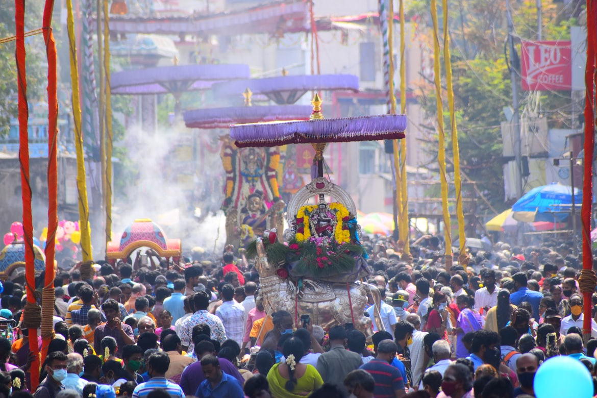
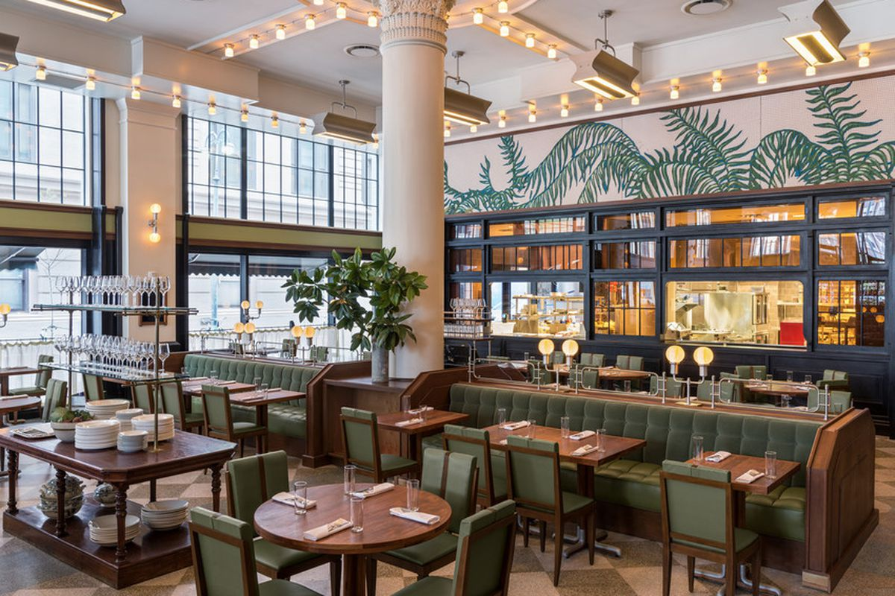
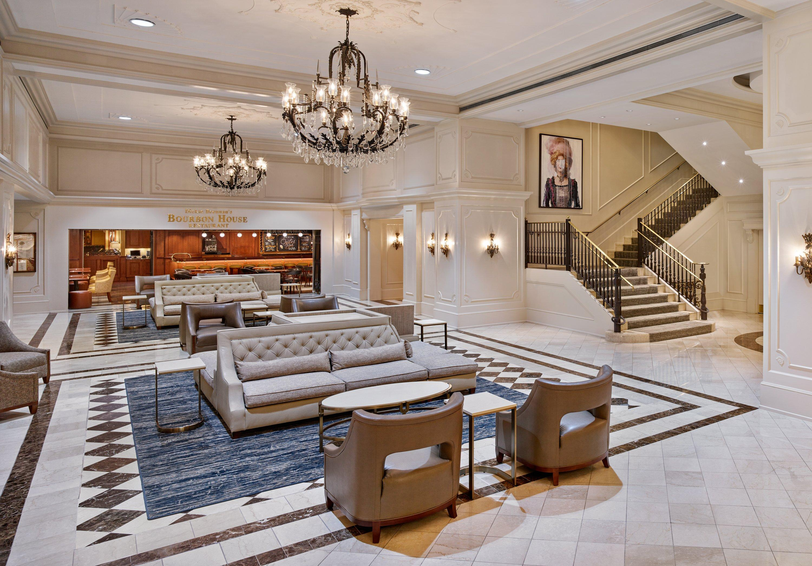
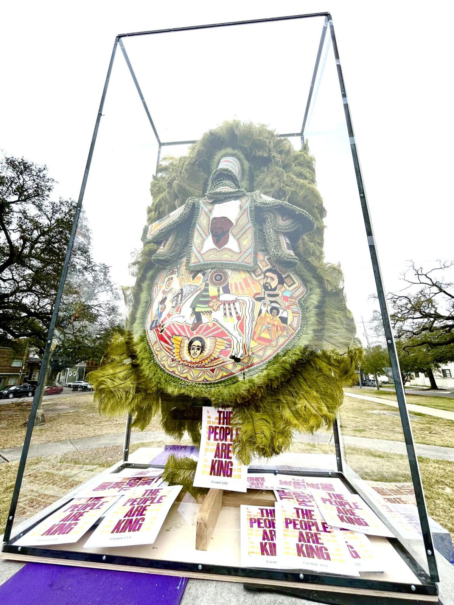

Revelers know to wear costumes or at least dress in purple, green, and gold, and adorn themselves with long beads caught from the floats of previous parades. You'll see a lot of crazy costumes, kids with their families are everywhere, and both locals and visitors having a great time.

kicks off Carnival season in New Orleans. Although some people use Carnival and Mardi Gras interchangeably, they are actually different things. Carnival is a time to eat, drink and be merry before the rigorous fasting and sacrifice during Lent. It is filled with parades, balls and other celebrations leading up to Mardi Gras, which is French for “Fat Tuesday.”
Enjoy A Whimsical Atmosphere Including The Food Stage Where Chefs Plate Signature Dishes. Come And Experience Our Selection Of Sophisticated Cocktails, Wines, Gulf Seafood & More! Inventive Cocktail Menu. Lunch & Dinner. Fresh Gulf Seafood.
Book your Hotel in New Orleans now. Quick, Easy Booking. No Reservation Costs. Book your Hotel in New Orleans LA online. No reservation costs. Great rates. Hostels. Get Instant Confirmation. Hotels. 24/7 Customer Service. Best Price Guarantee. Apartments. Motels.
The origins of Mardi Gras can be traced to medieval Europe, passing through Rome and Venice in the 17th and 18th centuries to the French House of the Bourbons. From here, the traditional revelry of "Boeuf Gras," or fatted calf, followed France to her colonies.

Cantrell was inaugurated as mayor on May 7, 2018, the first woman to hold the position in the city's history. Once in office, she established a new Office of Youth and Families, with the goal of creating a strategic plan to address families in crisis in the city. Cantrell also founded a Gun Violence Reduction Council, tasked with finding solutions to violent crime. Starting with a push to rededicate hotel taxes collected within the city for city use, Cantrell has focused on her #fairshare initiative to improve city infrastructure, public transportation, public parks, and green spaces. As part of that initiative, in October 2018 the City of New Orleans filed a lawsuit against four opioid manufacturers and distributors. In 2016, Cantrell was given a lifetime achievement award by the presidents of Tulane, Loyola and Xavier universities and the University of New Orleans for her service to the community.